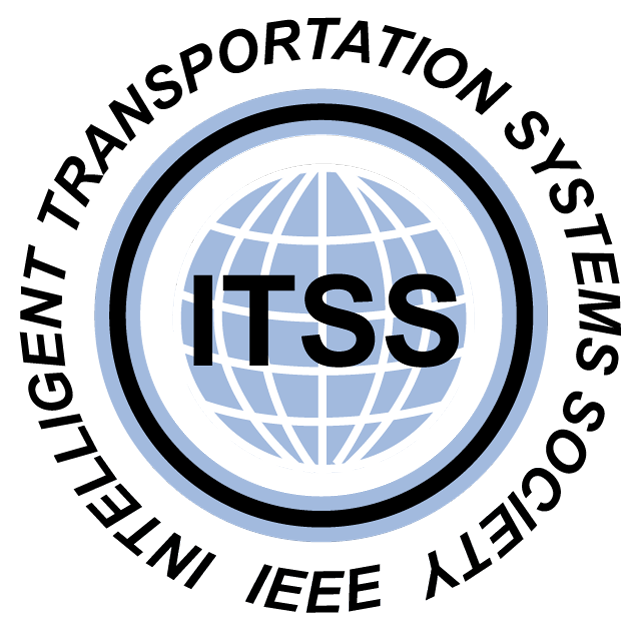
2024
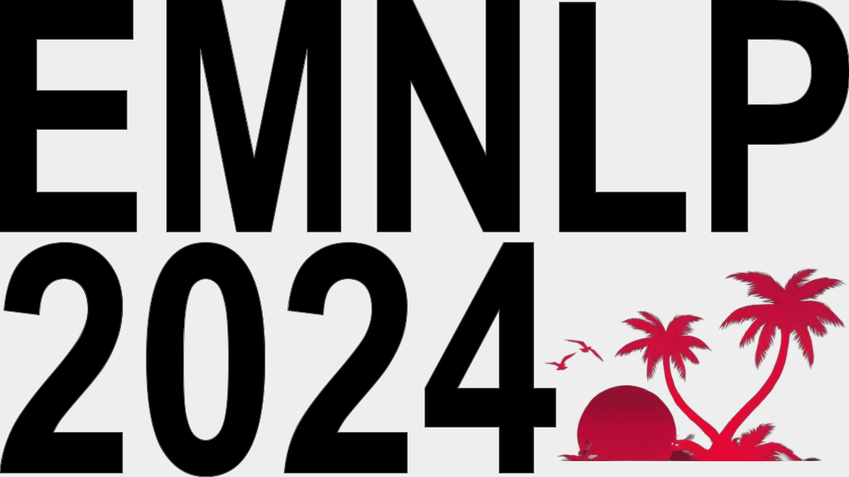
Nov. 12, 2024
We presented our paper "Learning Autonomous Driving Tasks via Human Feedbacks with Large Language Models" at the 2024 Conference on Empirical Methods in Natural Language Processing (EMNLP), Miami, Florida.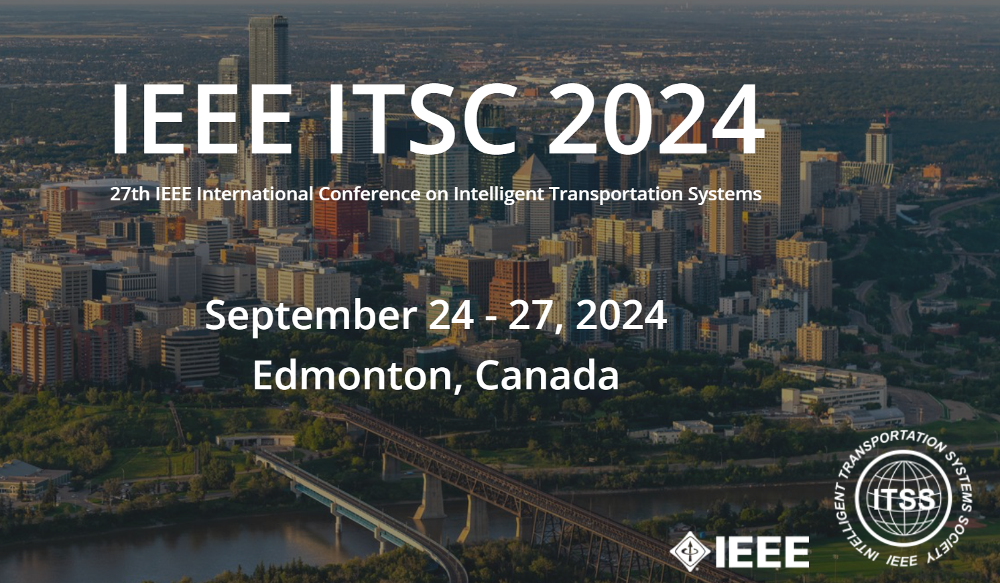
Sep. 24, 2024
We presented our two papers, "Personalized Autonomous Driving with Large Language Models: Field Experiments" and "Delay-Aware Multi-Agent Reinforcement Learning for Cooperative Adaptive Cruise Control with Model-Based Stability Enhancement," and hosted the 2nd Workshop on Large Language and Vision Models for Autonomous Driving (LLVM-AD), at the 27th IEEE International Conference on Intelligent Transportation Systems, Edmonton, Canada.
Sep. 16, 2024
Our work on large language models for autonomous driving was featured by Purdue News and multiple media outlets, such as ABC, CBS, FOX, TechBrew, and TechXplore.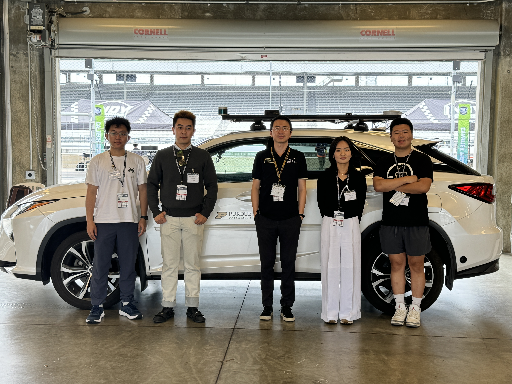
Sep. 6, 2024
Our lab was invited by Autoware Foundation to feature our autonomous vehicle at the Indy Autonomous Challenge, Indianapolis, Indiana.
Aug. 1, 2024
I was nominated the Assistant Director of the Institute for Control, Optimization and Networks (ICON), Purdue University, West Lafayette, IN.Jul. 9, 2024
Our paper, "A Multi-Fidelity Approach to Testing and Evaluation of AI-Enabled Systems," received the Best Paper Award from the ASME 2024 International Design Engineering Technical Conferences and Computers and Information in Engineering Conference (IDETC-CIE), Washington, DC.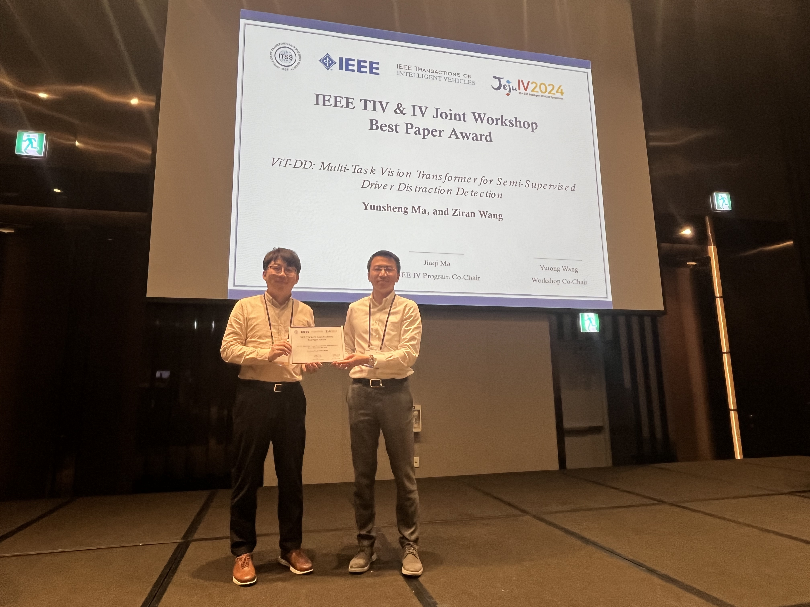
Jun. 2, 2024
Our paper, "ViT-DD: Multi-Task Vision Transformer for Semi-Supervised Driver Distraction Detection," received the Best Paper Award from the IEEE TIV & IV Joint Workshop, Jeju Island, South Korea.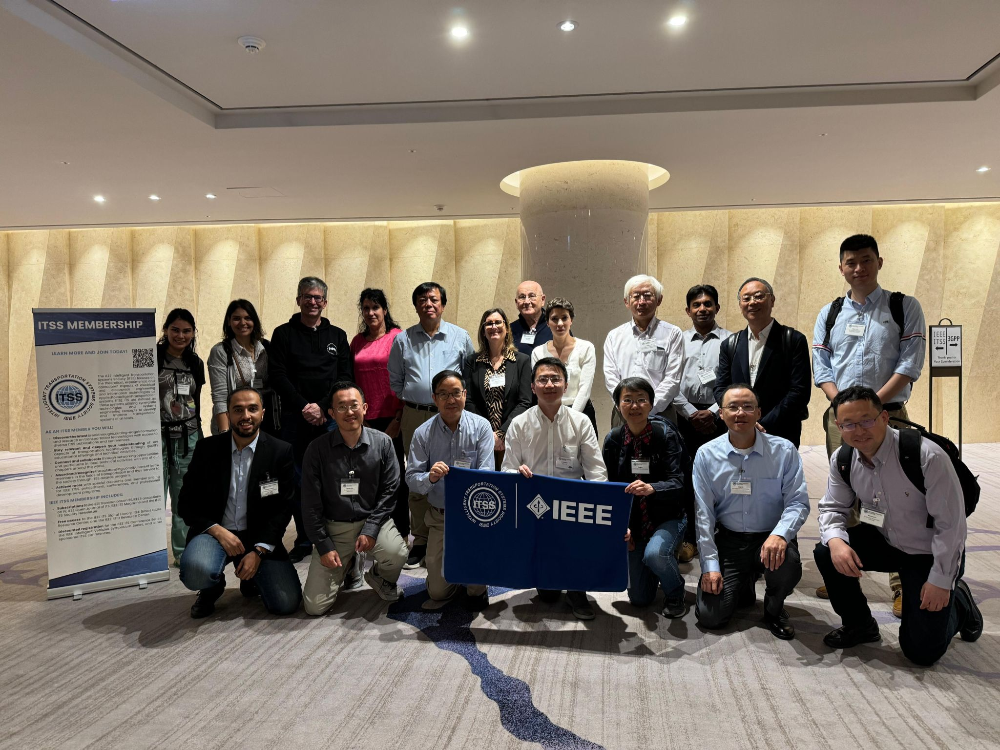
Jun. 1, 2024
I attended the IEEE ITS Society's Board of Governor and Technical Committee Chair meeting, Jeju Island, South Korea.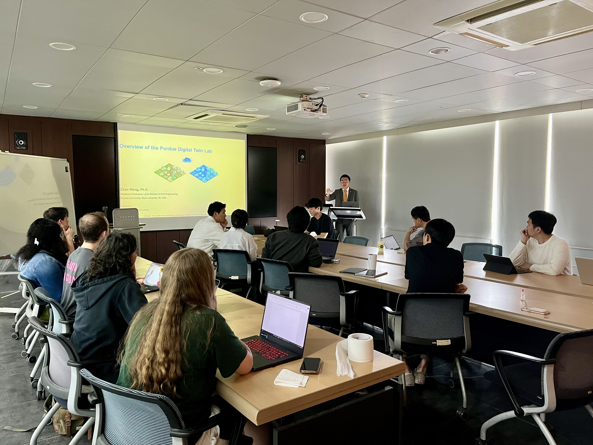
May 30, 2024
I was invited to visit Seoul National University and gave a talk at its Department of Civil and Environmental Engineering, Seoul, South Korea.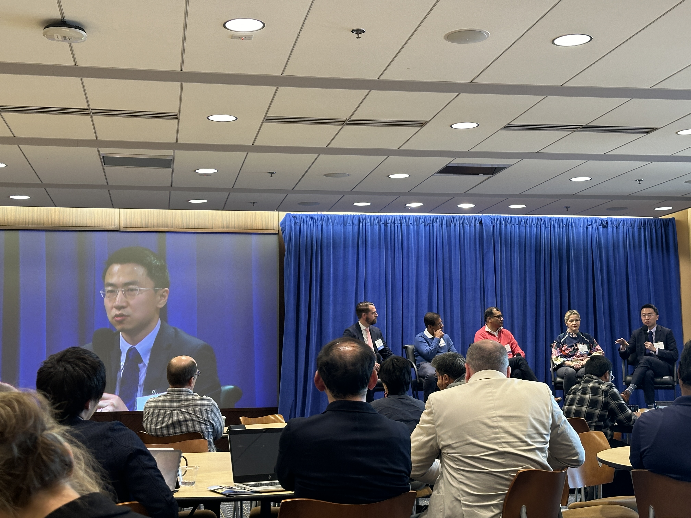
May 23, 2024
I was invited to attend the panel of "Generative AI for Transportation" at the 2024 Mcity Congress, Ann Arbor, MI.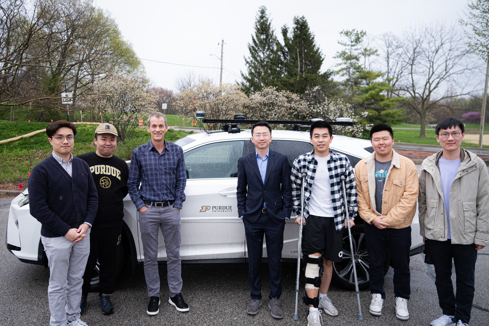
Apr. 10, 2024
We demonstrated our lab's large language model–based autonomous driving research to Jeff Dean, Chief Scientist of Alphabet, West Lafayette, IN.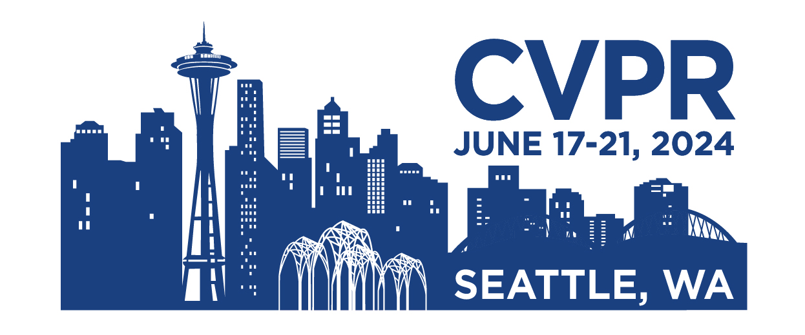
Feb. 26, 2024
Our three papers "Quantifying Uncertainty in Motion Prediction with Variational Bayesian Mixture", "LaMPilot: An Open Benchmark Dataset for Autonomous Driving with Language Model Programs", and "MAPLM: A Real-World Large-Scale Vision-Language Dataset for Map and Traffic Scene Understanding" were accepted to the 2024 IEEE/CVF Conference on Computer Vision and Pattern Recognition (CVPR).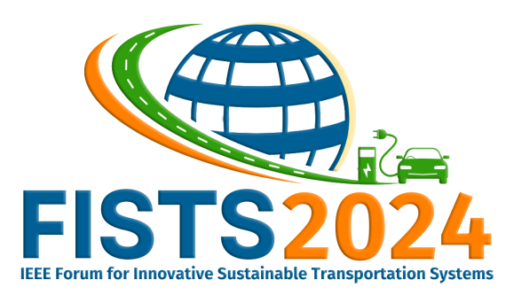
Feb. 26, 2024
I served as the program chair of the 4th IEEE Forum for Innovative Sustainable Transportation Systems, held in Riverside, CA.
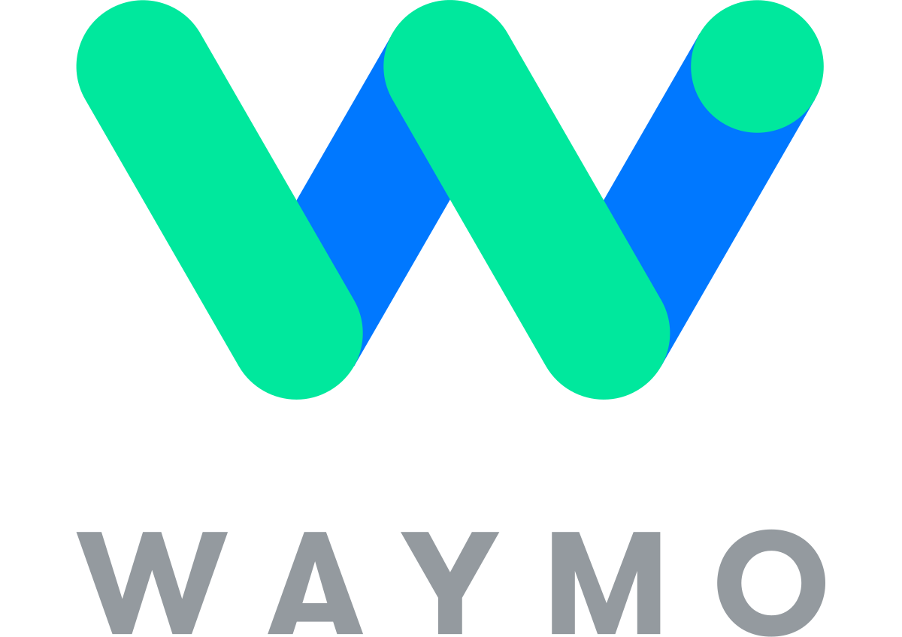
Feb. 23, 2024
We hosted Dr. Yin Zhou from Waymo for a campus visit at Purdue University.
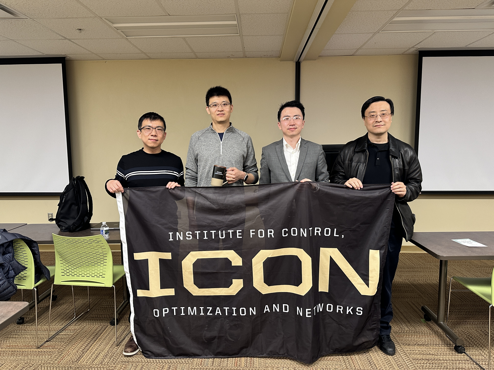
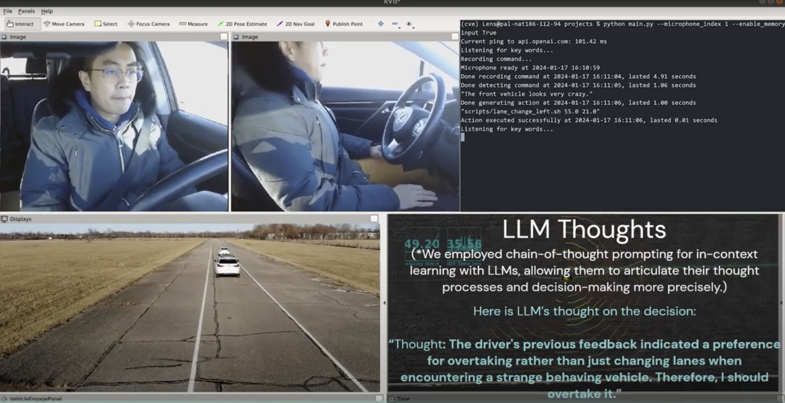
Feb. 6, 2024
We released our real-world demo on large language models for autonomous driving, marking the first trial of its kind in the world.
Jan. 12, 2024
Our three papers "Driver Digital Twin for Online Recognition of Distracted Driving Behaviors", "REDFormer: Radar Enlightens the Darkness of Camera Perception with Transformers", and "Federated learning for connected and automated vehicles: A survey of existing approaches and challenges" were published on IEEE Transactions on Intelligent Vehicles (IF=8.2).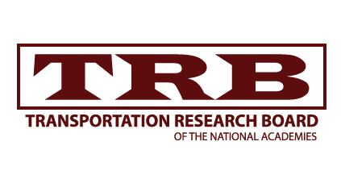
Jan. 10, 2024
We attended the Transportation Research Board (TRB) 103rd Annual Meeting in Washington D.C. and presented three posters highlighting our work.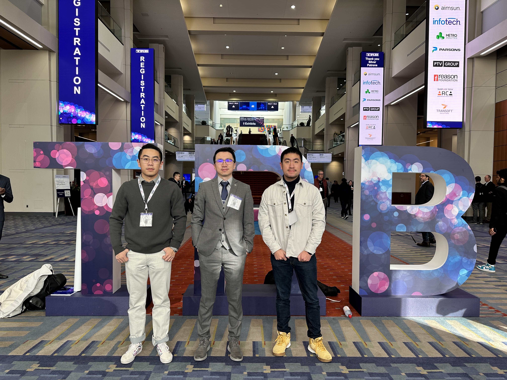
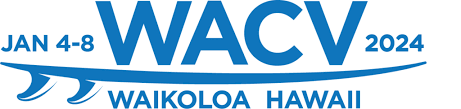
Jan. 8, 2024
We presented three papers and organized the 1st Workshop on Large Language and Vision Models for Autonomous Driving (LLVM-AD) at 2024 IEEE/CVF Winter Conference on Applications of Computer Vision (WACV) in Waikoloa, Hawaii.